Contrôleur de personnage (FPS, Third Person)
Ces instructions utilisent le paquet suivant : Starter Assets - First Person Character Controller | Essentials | Unity Asset Store
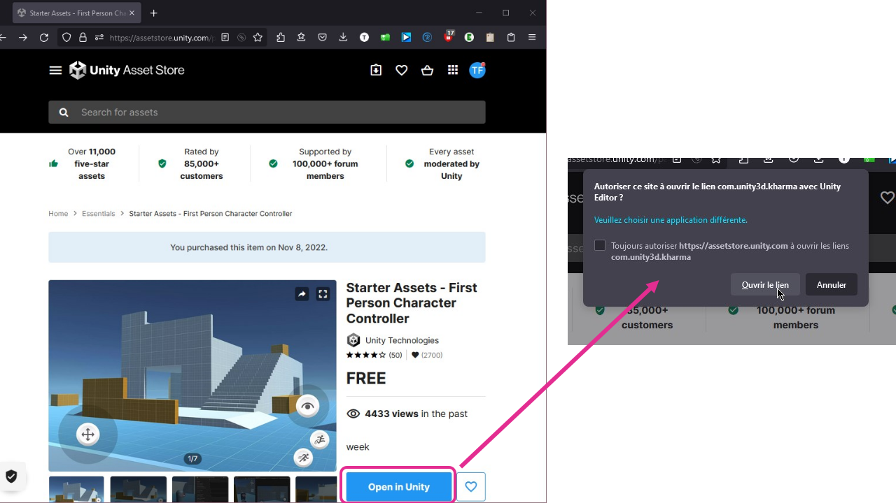
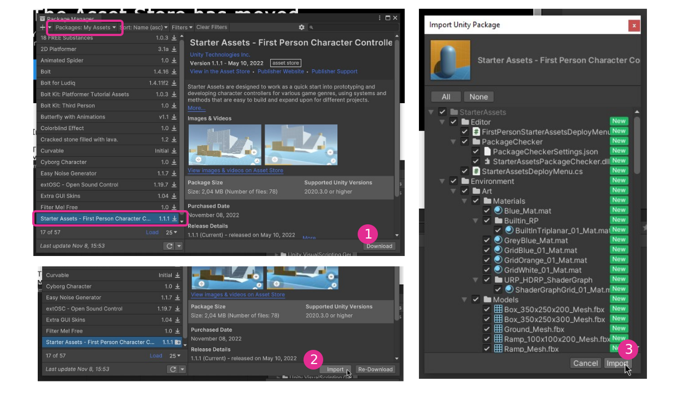
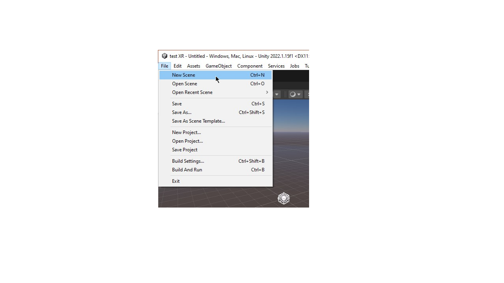
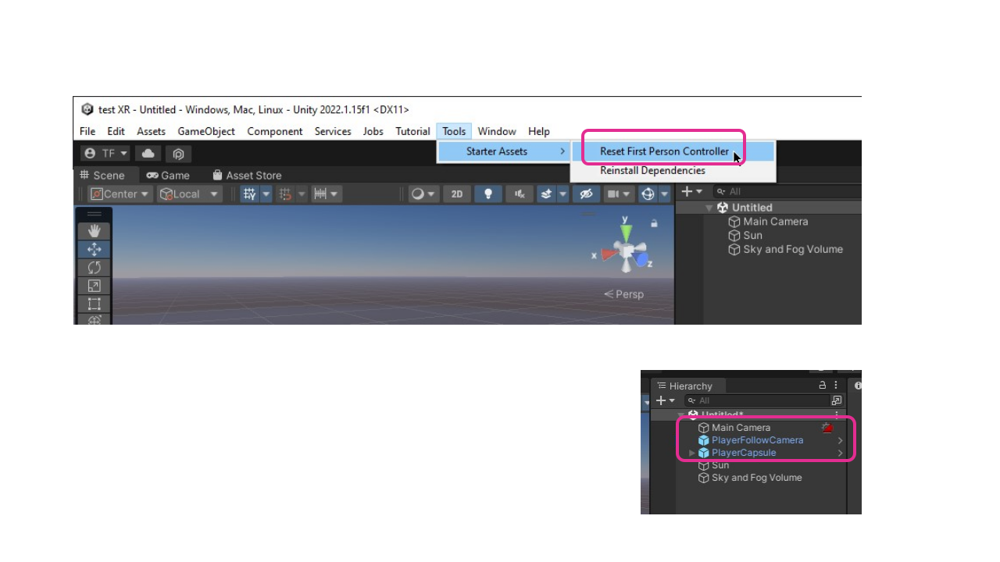
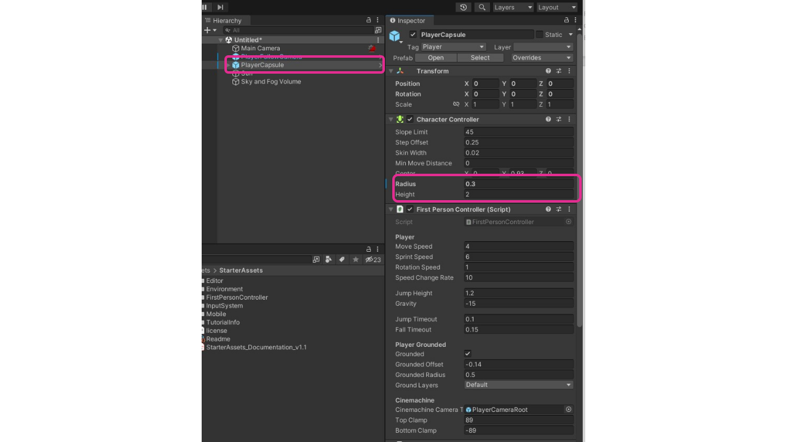
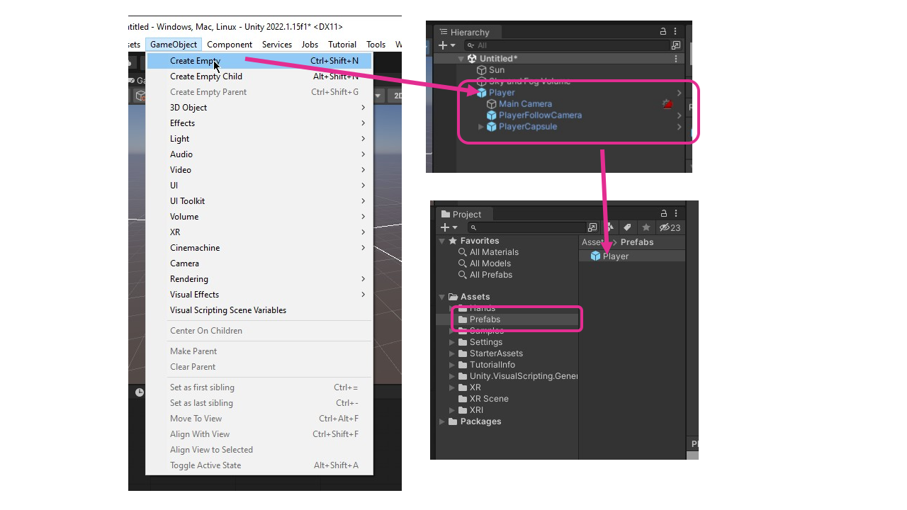
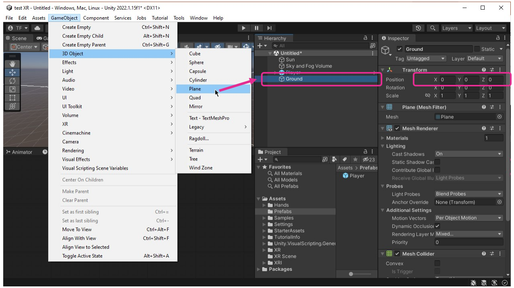
Ces instructions utilisent le paquet suivant : Starter Assets - First Person Character Controller | Essentials | Unity Asset Store
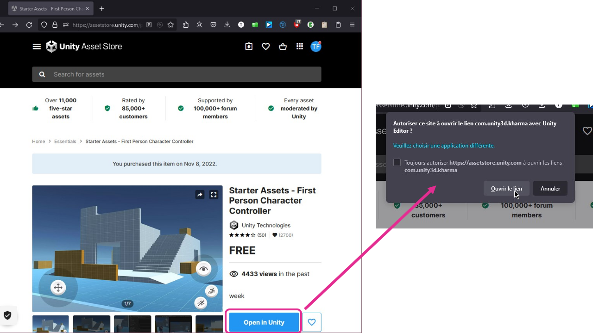
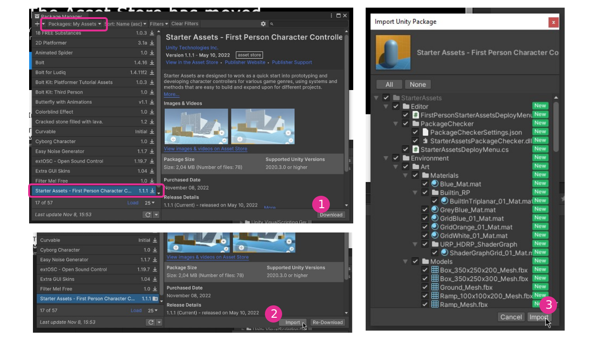
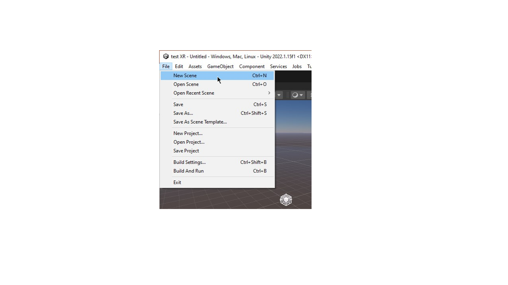
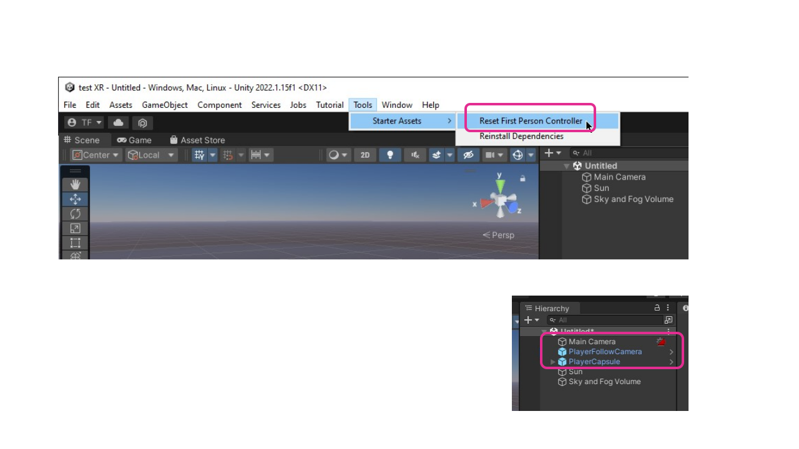
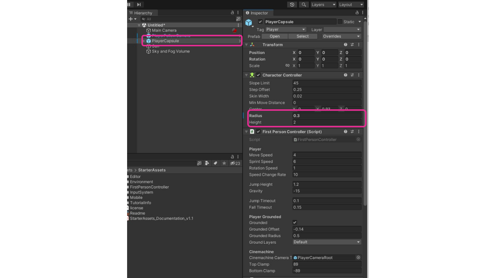
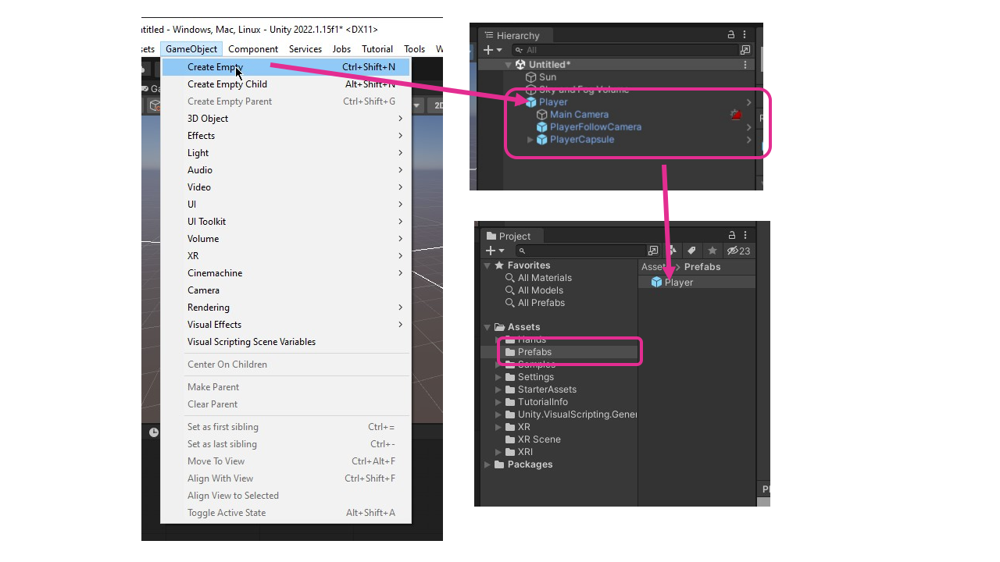
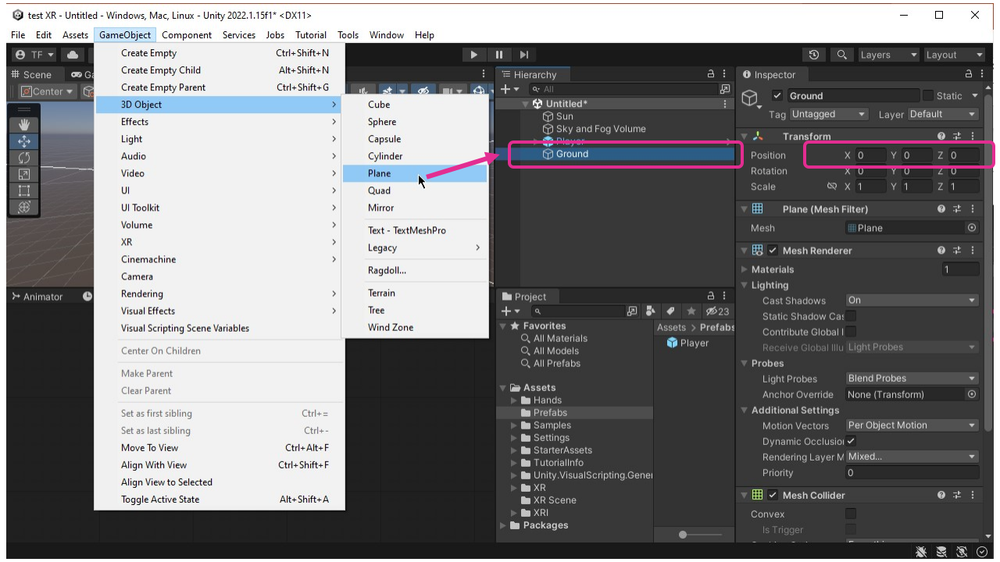